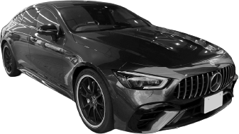
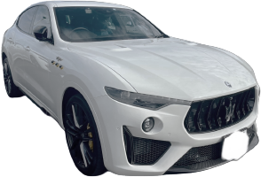
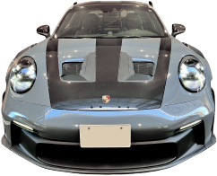
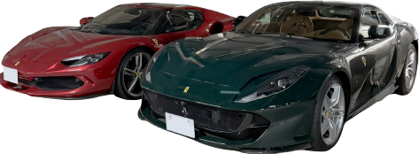
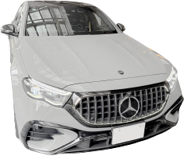
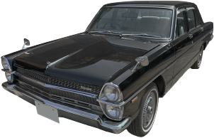
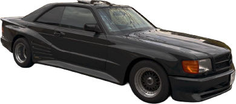
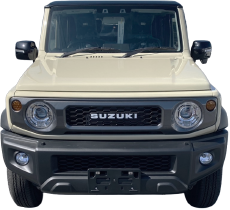
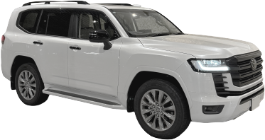

軽自動車
N-BOX、タント、スペーシア、ワゴンRなど。
乗りかえで手放すことが多いクルマこそ、まとめてご相談を。
ミニバン
子育てがひと段落して、ひとまわり小さいクルマへ。
人気の車種は、年式が古くても値段がつきやすいジャンルです。
SUV・4WD
ランドクルーザー、ジムニー、ハリアーなど。
海外でも人気があるので、走行距離が多くてもご相談ください。
セダン
クラウン、Eクラス、3シリーズなど。
大事に乗られてきたクルマは、整備記録もあわせて見させてください。
スポーツ・輸入車
ポルシェ、フェラーリ、メルセデスAMG、マセラティなど。
専門の買い手がつきやすいクルマです。
軽トラ
畑や現場で使ってきた軽トラも。
使い道が多いので、古くても需要があります。
商用バン・社用車
ハイエース、プロボックスなど。
法人の入れ替えで、まとめての売却もできます。
旧車・ネオクラシック
セドリック、W124、560SECなど。
旧いメルセデスは、専門ページでくわしくご案内しています。
これまでに扱った、
クルマたち。Our cars









※当社で取り扱った車両の一例です。
こんなクルマも、
ご相談ください。Also OK
1動かない
エンジンがかからない、バッテリーが上がったまま。
引き取りの方法から、一緒に考えます。
2車検切れ
公道を走れなくても大丈夫。
そのまま見させていただきます。
3キズ・へこみ
自社で修理もしているので、
直してから売る前提で、金額を出します。